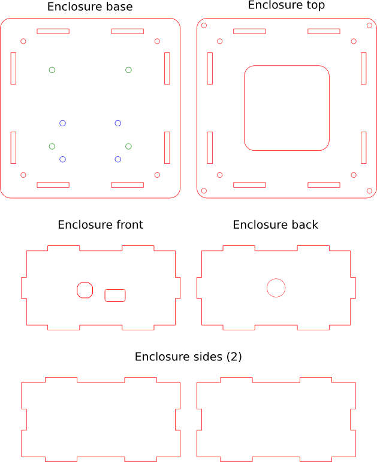
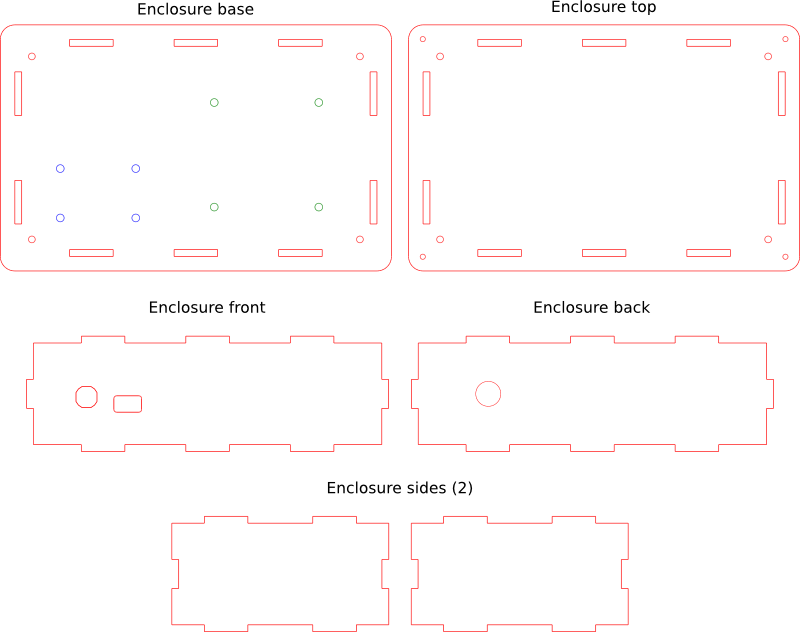

Acrylic enclosure
There are a total of 6 parts that make the stir-plate enclosures. In the kits these parts will have paper or plastic backing which should be removed before using.
Desktop stir plate enclosure

Colorimeter stir plate enclosure
